Four real pianos
A grand, an acoustic, an upright and a honky-tonk piano, each with its keys moving as they sound, and played on the same measured piano voices as Freally MIDI Master.
Four parts written in any style, shown as sheet music and played by realistic hands on a realistic instrument — and every part drags straight into your DAW.
This page describes what Freally Handscore version 1.0 will do. Today's version is 0.2.0: see the road to 1.0 on the home page.
Every figure is counted from the app itself. Nothing is estimated, and nothing is rounded up.
Handscore is free today: no paid tier, no subscription and no account. There is nothing to download yet, because there are no downloads before version 1.0.0, and later versions may be sold.
A grand, an acoustic, an upright and a honky-tonk piano, each with its keys moving as they sound, and played on the same measured piano voices as Freally MIDI Master.

Acoustic, nylon, electric and muted guitars, fretted, picked and strummed for real, and the bass guitar, played with the fingers and slapped.

Two hands that play every note the way a player would: the finger a pianist would choose, the fret and the stroke a guitarist would use.

Chords, melody, countermelody and bass, each on its own sheet, with every note lit as it plays.

Pick one of 73 genres, 1,507 artists or 833 producers, and the same rule-based generators write the four parts in that style.

Bring in your own audio or MIDI, and Handscore reads it into parts for the hands to play.

Public-domain pieces to watch and listen to. They are played only, and never leave Handscore.

One part at a time or all four together, dragged from the sheets straight into your DAW. That is the only way MIDI leaves Handscore.

Switch between them while the music plays; the sheets turn to stay readable and the hands never miss a note.

CLAP and VST3 on Windows, macOS and Linux, AU on macOS, and a standalone app for working without a DAW.

No account, no telemetry, no network and no model. Every part, fingering and movement comes from rules.
Freally Handscore 1.0 next to the tools people use to write parts or to watch piano played. The other products' cells come from their public listings and reviews, checked in October 2026; where we could not confirm something, the cell says so.
| Feature | Freally Handscore 1.0 | Scaler 3 | AR Pianist | Synthesia |
|---|---|---|---|---|
| Writes new chords, melodies and basslines in named styles | has it | has it | does not | does not |
| Runs inside your DAW as a plugin | has it | has it | does not | does not |
| Shows realistic 3D hands playing the notes | has it | does not | has itits own library of pieces | in partfinger numbers, no hands |
| Shows the notes as sheet music | has it | not confirmed | not confirmed | has it |
| Drags the MIDI into your DAW | has it | has it | does not | does not |
| Works offline, with no AI | has it | not confirmed | not confirmed | not confirmed |
Of these four, only Handscore 1.0 has every row: parts written in named styles, realistic hands playing them, the sheet music, the drag into your DAW and the plugin.
Scaler 3 is a much broader music-theory workstation. Synthesia is made for learning to play on your own keyboard, which Handscore leaves to version 1.9. AR Pianist puts its pianist in your room in augmented reality, which Handscore does not do.
Scaler, AR Pianist and Synthesia are the trademarks of their owners, who are not affiliated with Freally Handscore. Tell us if a cell is wrong and we will correct it.
Every part, every fingering and every movement comes from rules, with no model anywhere. The same style and the same seed give the same parts, every time.
The sheets are drawn from the MIDI they drag, and the hands play exactly those notes, so what lands on your track is what you watched.
The keyboard is a real piano's size, and every key turns on its balance rail the way a real key does.
No account, no telemetry and no cloud. The plugin and the standalone app never go online, and a build gate fails if networking code is ever added.
Stated plainly, because a feature list that hides its gaps is not worth reading. This page describes version 1.0, and Handscore is built one version at a time, so most of it is not built yet. Each version on the road to 1.0 is marked with its state.
There are no downloads before version 1.0, and none on this page.